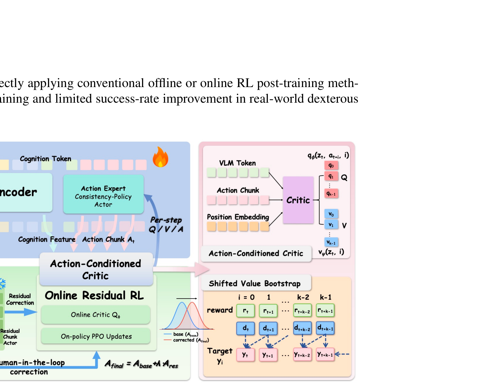

BORA: Bridging Offline Reinforcement Learning and Online Residual Adaptation for Real-World Dexterous VLA Models
Chen 等 · 2026 · arXiv:2605.30226 · Zotero MX6TU48C
BORA 先用离线数据学动作条件 critic，再冻结 VLA，用人类介入驱动的轻量 residual 修正真机误差，专门面向高自由度灵巧手。
§1 Introduction：灵巧 VLA 为什么需要“离线学意图，在线修执行”
灵巧手动作维度高、接触密集，离线数据常混有次优轨迹，生成式 VLA 还需跨多步 denoising 产生 action chunk。仅用 SFT 容易平均掉多模态解；直接在线探索又危险、低效，并会因早期 critic 不准破坏已经学到的跨对象能力。
BORA 将后训练拆成两段：离线阶段用 action-conditioned critic、IQL-style value 和 consistency policy 从次优数据提炼操作意图；在线阶段冻结 base VLA，继承离线 critic，只训练轻量 HiL residual chunk actor。最终动作是 base chunk 加残差，人类 intervention 同时提供安全保护与奖励，让模型只修正真实部署中的 outcome mismatch。
展开原文 · 两阶段设计
“freezes the VLA base and introduces a lightweight ... residual adaptation”
§2 Related Work：离线到在线、Consistency Policy 与 residual RL
IQL/AWAC 等离线到在线方法用旧数据初始化 value 与 policy，但原始算法面向普通连续 actor；consistency policy 将多步生成压到少步，适合高维 action chunk。Residual RL 则保留 base policy，把在线探索限制为局部纠错，尤其适合真机安全。
BORA 的特殊性是把这三者串起来：离线 critic 为 residual 提供可继承价值尺度，chunk residual 对齐 VLA 部署接口，HiL 信号修复接触分布偏移。与全参 VLA RL 相比遗忘风险低，但若 base intent 本身错误，轻量 residual 可能没有足够容量越过它。
§3 问题设定：SFT 到底漏掉了什么
VLA 预训练与 SFT 解决“从观测到动作的模仿”，但部署是闭环过程：动作会改变下一帧，错误会把策略带到演示没有覆盖的状态。灵巧手动作维度高、遮挡多，直接在线探索既危险又容易让 critic 只记背景。
离线 actor 采用少步一致性动作头；critic 同时读取 VLM cognition tokens、动作 chunk 与块内位置编码。
展开原文 · 核心主张
“freezes the VLA base and introduces a lightweight, Human-in-the-Loop residual adaptation”
§4 方法总览：反馈信号怎么走
上一节明确了状态、动作与反馈，现在沿论文原图追踪训练信号。重点不是背模块名，而是判断：哪部分保持预训练先验，哪部分真的被 RL 改写。

1. 一致性策略用少量去噪步生成动作块
基座用 consistency/少步生成器把噪声快速映射为动作 chunk。少步推理降低控制延迟，也让后续 residual 能以较高频率修正，而不是等长去噪链结束后才发现动作已经过时。
输入是什么：随机噪声，以及当前画面、语言指令或机器人状态等条件信息。噪声只是生成过程的起点，不是机器人真的要执行的动作。
这一步究竟做什么：基座用 consistency/少步生成器把噪声快速映射为动作 chunk。少步推理降低控制延迟，也让后续 residual 能以较高频率修正，而不是等长去噪链结束后才发现动作已经过时。
输出到哪里：一组诊断数值、分类结果或评测分数；它告诉后续模块当前结果哪里好、哪里需要修正。这个结果会交给下一步“critic 同时读取认知 token 与动作块”继续处理。
为什么不能省略：没有统一诊断或评分，后续模块无法知道哪里出错，也无法公平比较两个模型是否真的进步。
2. critic 同时读取认知 token 与动作块
critic 不只看像素，还读取 VLA 的认知 token 与候选动作 chunk。认知 token 提供任务语义，动作 chunk 提供具体执行方案；二者联合后，Q 才能区分‘语义正确但轨迹危险’的候选。
输入是什么：来自上一步“一致性策略用少量去噪步生成动作块”的产物：一组诊断数值、分类结果或评测分数；它告诉后续模块当前结果哪里好、哪里需要修正。本步骤还会按论文设置读取当前条件、时间步或训练信号。
这一步究竟做什么：critic 不只看像素，还读取 VLA 的认知 token 与候选动作 chunk。认知 token 提供任务语义，动作 chunk 提供具体执行方案；二者联合后，Q 才能区分‘语义正确但轨迹危险’的候选。
输出到哪里：一组比原始输入更紧凑的内部特征；它不是最终动作或画面。这个结果会交给下一步“离线 IQL/PPO 提炼可靠意图”继续处理。
为什么不能省略：模型不能高效地直接在所有原始像素和长序列上推理；这一步把信息压成后续模块能处理、比较和复用的形式。
3. 离线 IQL/PPO 提炼可靠意图
离线阶段用 IQL/PPO 类目标从历史轨迹提取可靠意图，先把 critic 与基座动作分布校准。它的作用是提供能工作的起点，而不是在静态数据上宣称已经解决所有部署偏移。
输入是什么：来自上一步“critic 同时读取认知 token 与动作块”的产物：一组比原始输入更紧凑的内部特征；它不是最终动作或画面。本步骤还会按论文设置读取当前条件、时间步或训练信号。
这一步究竟做什么：离线阶段用 IQL/PPO 类目标从历史轨迹提取可靠意图，先把 critic 与基座动作分布校准。它的作用是提供能工作的起点，而不是在静态数据上宣称已经解决所有部署偏移。
输出到哪里：经过本步骤处理、含义更明确的中间结果。这个结果会交给下一步“冻结基座，用 HiL residual 做在线小修正”继续处理。
为什么不能省略：它承担上下两步之间的接口；缺少它，前一步产生的信息无法以正确格式或正确含义传到下一步。
4. 冻结基座，用 HiL residual 做在线小修正
上线时冻结大基座，只训练人类介入触发的 residual。residual 只处理偏差状态并保持幅度受限，既让新数据快速生效，也降低全参更新把通用 VLA 能力冲掉的风险。
输入是什么：来自上一步“离线 IQL/PPO 提炼可靠意图”的产物：经过本步骤处理、含义更明确的中间结果。本步骤还会按论文设置读取当前条件、时间步或训练信号。
这一步究竟做什么：上线时冻结大基座，只训练人类介入触发的 residual。residual 只处理偏差状态并保持幅度受限，既让新数据快速生效，也降低全参更新把通用 VLA 能力冲掉的风险。
输出到哪里：经过本步骤处理、含义更明确的中间结果。这是图中这条链路的最终产物，随后会进入真实执行、模型更新或指标评测。
为什么不能省略：它把前面得到的内部结果落实为可执行动作、可训练模型或可解释指标，完成从方法到结果的最后一步。
§5 机制细拆：动作、价值与更新边界
上图给出了宏观流程，但真正决定训练是否稳定的是三个接口：动作以什么粒度出现、反馈怎样变成可学习信号、哪些参数允许被更新。
§6 目标函数：把直觉压缩成可检查的量
前一节说清了信号路径，这里把核心优化目标写成教学化公式。读公式时依次检查：回报影响谁、数据支持在哪里、预训练策略受到什么约束。
- $A_{base}$
- 冻结 VLA 给出的动作块
- $\pi_{res}$
- 在线学习的轻量残差策略
- $\lambda_{res}$
- 限制修正幅度的安全系数
先联合训练离线基座和 action-conditioned critic，再冻结 VLA，仅更新轻量 chunk residual，并继承离线 critic。
§7 训练与评测：数字是在什么条件下得到的
只看最终成功率会隐藏数据预算、仿真/真机差异和基座强弱。本节把论文的实验对象与比较关系放回同一张表。
| 策略与动作 | 离线 actor 采用少步一致性动作头；critic 同时读取 VLM cognition tokens、动作 chunk 与块内位置编码。 |
|---|---|
| 训练反馈 | 离线阶段用 IQL 式价值与 clipped policy improvement；在线阶段使用稀疏成功奖励和人类 intervention 信号。 |
| 更新方式 | 先联合训练离线基座和 action-conditioned critic，再冻结 VLA，仅更新轻量 chunk residual，并继承离线 critic。 |
| 实验覆盖 | 五个真实灵巧手任务覆盖高自由度、遮挡与接触变化；同时测试标准设置与未见物体泛化。 |
| 关键对照 | 传统 decoupled critic 容易抓背景捷径；直接全参在线微调会产生特征漂移。BORA 把语义 token、动作后果和 residual 安全边界绑定起来。 |
§8 结果怎么读：证据、因果与可迁移结论
五个真实灵巧任务上平均成功率绝对提升 33%，未见物体泛化最高提升 43%。
传统 decoupled critic 容易抓背景捷径；直接全参在线微调会产生特征漂移。BORA 把语义 token、动作后果和 residual 安全边界绑定起来。
对高自由度真机，‘冻结强基座 + 继承 critic + 小 residual’比全参 RL 更像可部署方案。
§9 复现与工程检查
前一节判断了证据强度，复现时还要把训练信号对齐、时间尺度和数据统计逐项落地，否则“同名算法”也可能得到完全不同的结果。
- 动作块内 Q/V 的时间对齐不能错一位；residual 系数要限制修正幅度；必须报告人工介入次数与硬件失败。
- 先跑通不加 RL 的预训练/SFT 基线，并保存逐任务成功率与失败视频。
- 同时记录环境步数、真实墙钟时间、人工介入次数、更新次数和推理延迟。
- 把奖励、终止、action chunk mask 与归一化统计做成可视化单元测试。
§10 适用边界与研究启发
需要人类介入信号与可靠的离线 critic；安全成本被降低但没有消失。
对高自由度真机，‘冻结强基座 + 继承 critic + 小 residual’比全参 RL 更像可部署方案。